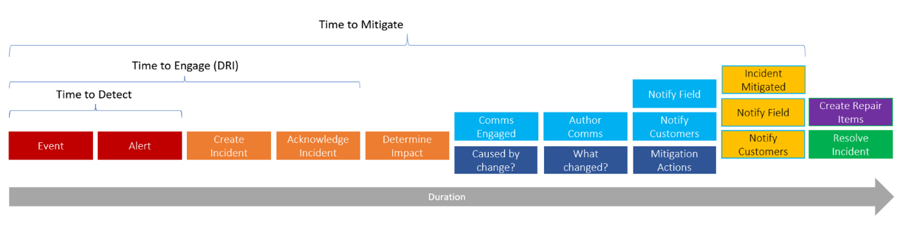

DRI Scenarios
To better understand our product and the problem we are solving, we have laid out a few DRI scenarios that detail the FCM User Experience.
Background:
On-call Engineer (aka DRI). This is the engineer, who is the on-call for a given week (typically, weekly rotation) who first responds to an ICM incident, when an IcM incident is assigned to their service team.
Azure mostly follows a DevOps model, by which the developers working in an area rotate to take-on the on-call engineer duties. The tenure and expertise of on-call engineers vary vastly, from being just a few weeks in the team to being a veteran of the service. Most teams have a strong on-boarding curriculum for the DRIs. However, due to the nature of the processes involved, coupled with the complexity of Azure and plethora of tools available, learning to be an effective DRI takes anywhere from a few weeks to several months.
DRIs are typically trained to ask ‘what’s changed?’ as the first course of investigation of an IcM incident. With about 50% of the incidents in Azure being caused due to a change (code/configuration/infrastructure), investigating and zeroing down on the culprit change that has led to the incident, is one of the most challenging aspects of a DRI’s role.
While most DRIs on the team have a way (although tedious) to find changes that are being deployed by their own services, there is not much visibility into the changes that are made by the dependent services. Thus, identifying ‘what changed’, either in their own service or in a dependent service and hence, led to an incident, is a critical investigation that the DRI needs to conduct as part of the mitigation measures.
In the event, the change was made by the dependent service, identifying that change and engaging the DRI of the dependent service team is key to incident mitigation.
‘Time to Engage (TTE)’ a DRI and ‘Time to Mitigate (TTM)’ an incident, are two (of the several key) metrics that are closely evaluated within Azure. Reducing the TTE and TTM not only improves the health of the DRI, but also provides a better customer experience to Azure customers.

Scenario 1: DRI is paged for an IcM incident that has been raised by a monitor. The IcM incident has impacted service and fine-grained location details.
Log Analytics Control Plane DRI gets paged for a Sev 2 IcM Incident that was created. The DRI looks up the incident details in IcM and acknowledges the incident.
The DRI navigates to FCM Change Explorer to identify which change(s) could have caused the incident. The DRI only has to provide the IcM Incident # and Change Explorer auto-populates the incident information from IcM, incident timeline, service and location associated with the incident.
The list of changes made by Log Analytics Control Plane at the fine-grained location are displayed as the search results. The DRI can now easily go through the finite list of changes to determine which change has caused the incident for the Log Analytics Control Plane team.
Scenario 2: IcM Incident does not have a recognizable location. However, DRI knows the impacted fine-grained location (node/tenant/stamp) and the impacted service/component
Log Analytics Control Plane DRI gets paged for a Sev 2 IcM Incident that was created. The DRI looks up the incident details in IcM and acknowledges the incident. The IcM incident does not mention the impacted location. The DRI checks the Azure DevOps Release to see if their team made any deployments. From Azure DevOps, the DRI knows that there were deployments, but it is a very tedious task to figure out the exact change that could have probably caused the incident. The DRI next looks up the Telemetry to find out the stamp (aks-useast-01, fine-grained location) that has been impacted by the incident. The DRI now knows that there were some deployments (but does not know what was deployed and when it was deployed) and the DRI knows the stamp that was impacted.
With this knowledge, the DRI now navigates to FCM Change Explorer to identify which change(s) could have caused the incident. The DRI only has to provide the IcM Incident # and FCM auto-populates the incident information from IcM, including the incident timeline.
The DRI has the flexibility to refine the search by providing the fine-grained location and zeroing down on the Log Analytics Control Plane components. The list of changes made by Log Analytics Control Plane, for the specific components, at the aks-useast-01 location are displayed as the search results. The DRI can now easily go through the finite list of changes to determine which change has caused the incident for the Log Analytics Control Plane team.
Scenario 3: DRI knows list of impact fine-grained locations (node/tenants/stamps) only. DRI, does not know if a service/component made a change.
XStore DRI gets paged for a Sev2 IcM incident that was created by a monitor. The DRI looks up the incident details in IcM and acknowledges the incident. Based on available internal XStore tools, DRI is able to retrieve the list of impact tenants.
DRI navigates to FCM Change Explorer. DRI provides the incident # to start with and FCM auto-populates the incident information from IcM, incident timeline, service and location associated with the incident. The list of changes, grouped by all the XStore services, for the impact location are displayed as the search results.
DRI can now further refine the search results, by filtering for the full list of impact tenants. The list of changes that were made across ALL the impact tenants, grouped by the XStore service are displayed. This helps to zero down on the change that was deployed on the list of impact tenants.
Scenaro 4: DRI knows their service did not deploy any changes, however, their service is still down.
ODSP DRI gets paged for a Sev2 IcM incident that was created as a response to a ticket from a 1P Customer. The DRI looks up the incident details in IcM and acknowledges the incident. On checking the telemetry and logs, the DRI is able to confirm the regression but is unable to identify the cause of the regression.
DRI navigates to FCM Change Explorer. DRI provides the incident # to start with. FCM auto-populates the incident information from IcM, incident timeline, service and location associated with the incident.
DRI toggles the option to see the changes made by the dependent services. DRI de-selects their own services. Thus, all changes made by the dependent services, grouped by each of the dependent service, at the impact location is displayed. The DRI is able to zero down on the change made by the dependent service. The ODSP DRI, next selects the option to view the DRI point of contact of the dependent service and reaches out to the dependent service DRI for further mitigation